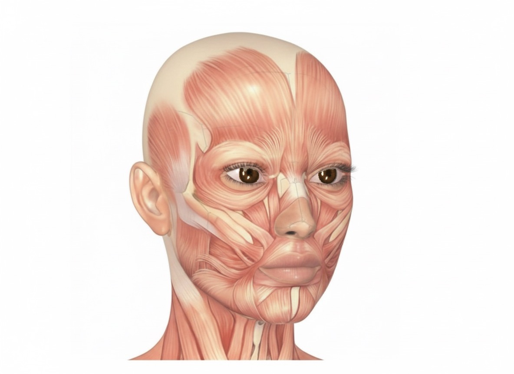
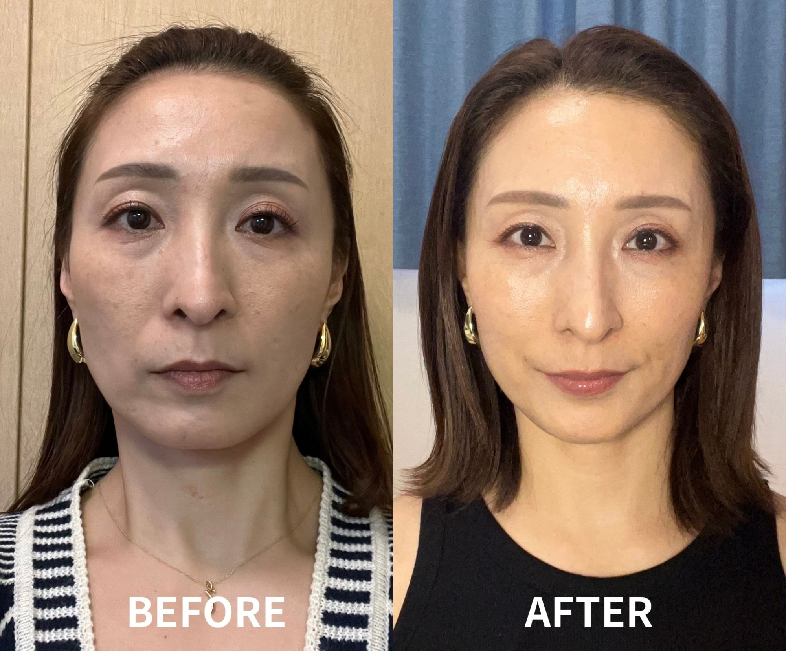
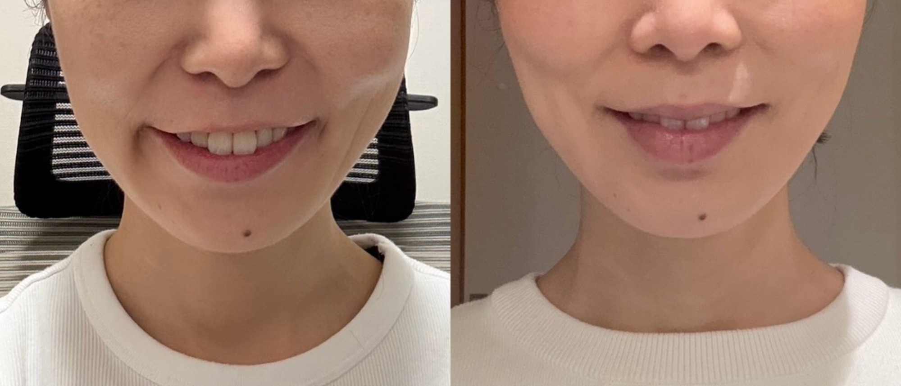
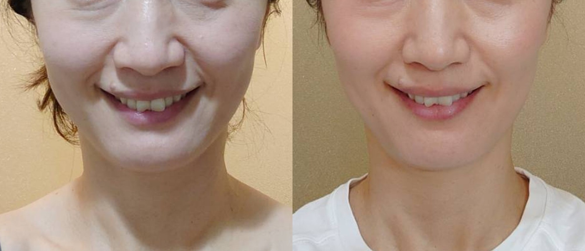
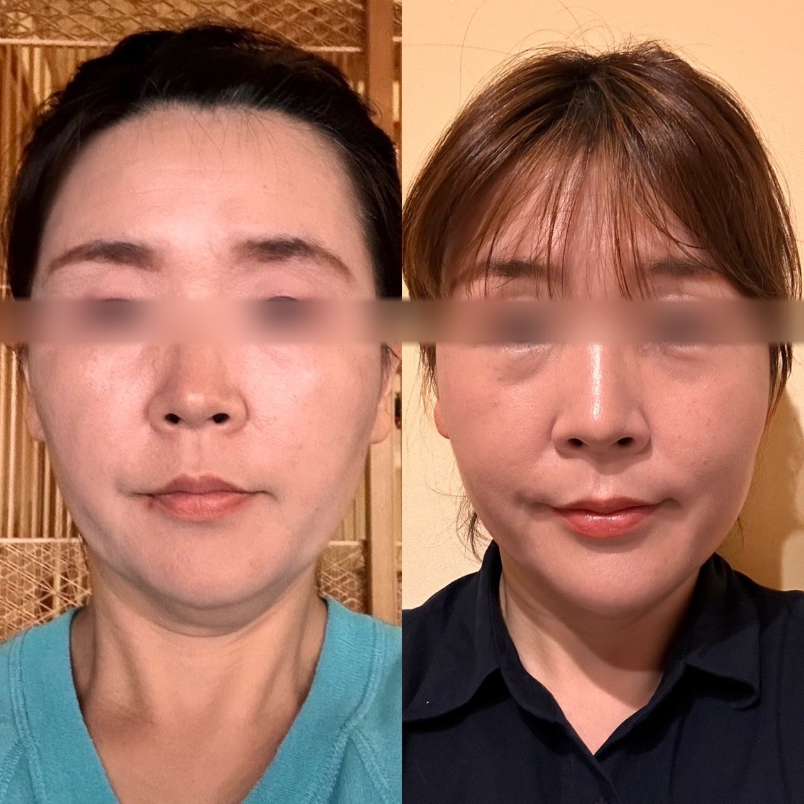
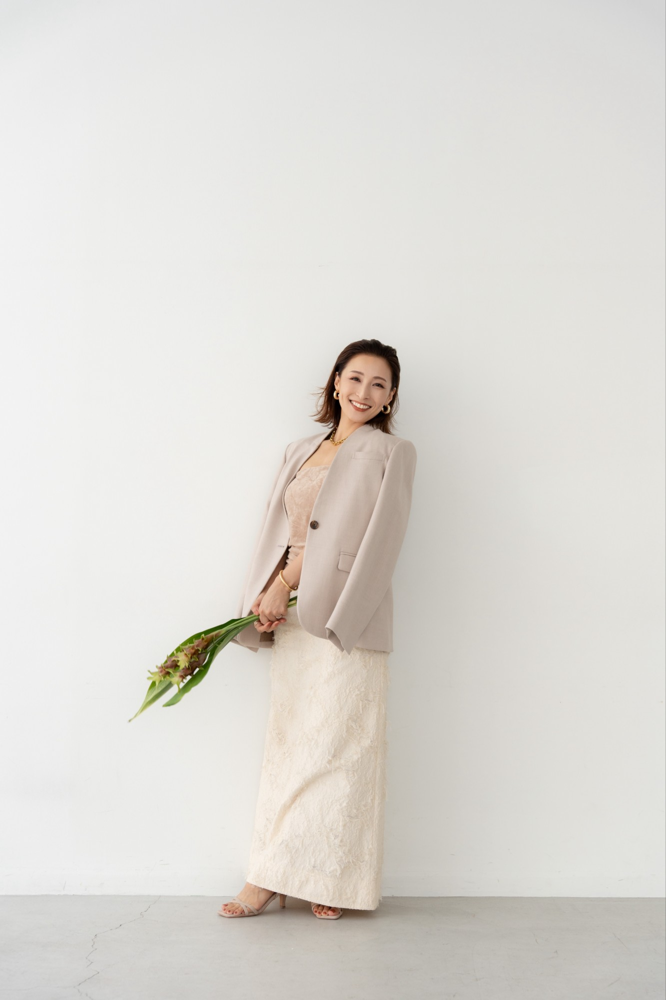

体験コース
29,800円（税込）
オンライン60分×3回（約3週間）。やり方を体感し、自分の方向性を知る3回。体験費は本コース申込時に全額割引（充当）。
体験について相談するその先にあるのは 自分らしい笑顔と自信。
ほうれい線もフェイスラインも
首・姿勢・呼吸・舌から見直し、あなたに必要な順番で
かつて私は 心がうまく動かなくなって
笑顔がつくれなくなっていました。
そんなある日 子どもにこう言われたんです。
「ママ なんで怒ってるの？
ニコニコして」
ハッとしました。
顔の表情は 心とつながっている。
そして 作り笑いでは続かない ということも。
だから私がお伝えするのは
その場だけ顔を動かすテクニックではありません。
首・姿勢・呼吸・舌——土台から整えて
“自分らしい笑顔”を 自分の手で取り戻していく。
顔は あくまで入口。
本当に取り戻してほしいのは
「私なら大丈夫」と思える自信です。
だから私は 教えて終わりにしません。
あなたが あなたの笑顔を取り戻すまで 隣で伴走します。
変わらなかったのは頑張りが足りないからではありません。
見る場所と整える順番が違っていただけです。
顔は顔だけでできているわけではありません。頭の位置、首の緊張、姿勢、呼吸、舌、食いしばり。顔の下にある条件が変われば表情の使われ方も変わっていきます。

前頭筋 側頭筋 小頬骨筋 大頬骨筋 咬筋 口角下制筋 皺眉筋 眼輪筋 上唇挙筋 笑筋 口輪筋 オトガイ筋顔には、大小いくつもの表情筋が重なっています。
その一つひとつが、頭・首・姿勢とつながって働いています。だから表面をなぞるのではなく、どの筋肉が“どう使われているか”から見直していきます。※イメージ図です。
顔は、顔だけで
だから、顔だけを
Refra美 — the philosophy

これは、伴走者である理加自身の3ヶ月。同じ角度・距離で、加工なしで撮影しています。「顔以外から整える」——その結果です。
※変化には個人差があり、同じ結果を保証するものではありません。
Refra美（リフラビ）は、
「顔だけ」を頑張る美容から、
40〜50代の女性が、
その“捉え直し”に、
鍛える前に整える。顔の“下”にある4つを見直すことからRefra美の伴走は始まります。
顔を支える台座
顔が乗る土地
巡りと動きを生むエンジン
内側から支える支柱
たとえば「二重あご・ほうれい線」のご相談。顔だけを見るか、土台から見るかで最初の一手が変わります。
※ 医療的な診断や断定はしません。「可能性を確認する」「影響を見ていく」という形で進めます。
| 比較軸 | 一般的なセルフケア | 【Refra美メソッド】 |
|---|---|---|
| 見る場所 | 気になる顔の部分 | 顔＋首・姿勢・呼吸・舌・生活背景 |
| メニュー | 全員ほぼ同じ | 写真と現在地から個別設計 |
| 進め方 | 動画を見て真似る | その場でフォーム確認と修正 |
| 振り返り | 感覚だけ | 毎回の写真比較と変化分析 |
| 続け方 | 決められた量を頑張る | 生活に戻せる量へ調整 |
| ゴール | 一時的な見た目の変化 | 自分で選び戻れるセルフケア |
完全マンツーマンだからできるのは「あなたの顔と暮らし」を起点にすること。初回にこんな視点で現在地を確認します。
「分析して終わり」ではなく
この輪をレッスンのたびに回していきます。
3ヶ月で終わりではありません。
目指すのは一生モノのセルフケアを手に入れること。いつでもどこでも、自分で自分をメンテナンスできる——その力があなたの中に残ります。
美容って、
これから先もずっと続いていくもの。
そのたびに
「次は何をやればいい？」
「また誰かにお願いしなきゃ」
と探し続けるのではなく、
自分の顔を見て、
自分に必要なケアを選んで、
自分で整えていける。
Refra美で覚えたセルフケアは、
3ヶ月が終わってもなくなりません。
特別な場所も、
特別な道具もいらない。
首、姿勢、呼吸、舌。
そして、自分の手。
一度身につけたら、
いつでも、どこでも、
自分で自分を整えていける。
顔を整えるのは、手段のひとつ。
本当に取り戻してほしいのは、
「自分を好き」と思える自信。
そして、その先の人生を、
もっと明るく、楽しんでほしい。
だから私は、
「通い続けてもらうこと」を
ゴールにしていません。
3ヶ月後、
「これからどうしよう」ではなく、
「私なら大丈夫」
って卒業してほしい。
3ヶ月のレッスンではなく、
これから先の自分に残るものを。
写真・ヒアリングでいまの現在地を知る
首・姿勢・呼吸・舌の緊張を見直す
必要な表情筋を正しいフォームで使う
毎回の写真から変化を確認する
反応に合わせてメニューを再構築する
卒業後も、ひとりで続けられるようにする
← スワイプで見る →
← スワイプで見る →
お仕事やご予定の都合に備えて、受講できる期間に余裕をもたせています。BASICは4ヶ月目まで、PREMIUMは6ヶ月目まで受講可能です。
冒頭でご覧いただいた理加自身の変化に続いて、掲載許可をいただいたご生徒様の記録です。


← スワイプで見る →

笑おうとすると口角が痙攣して、
うまく笑えなかった彼女が、
今、自分のお店で笑顔で
「お店をオープンするまでに、上手に笑えるようになりたい」——そう言って来てくれたC様。メンタル面の影響も大きかったので、楽しいレッスンで“心もほぐす”ことを大切に進めました。「続けられないかも…」と弱音がこぼれた時も、毎日のやり取りで寄り添ううちに、気持ちは少しずつ前向きに。そして卒業後、彼女は無事お店をオープン。素敵な笑顔でお客様を迎えていました。
——その姿をひと目見たくて、新潟のお店まで会いに行きました。インタビュー動画も撮影しています。
※ご本人の許可を得て掲載。プライバシー保護のため瞳をぼかしています。効果・体感には個人差があります。
「気になっていた口元のたるみが改善されてきて、少し自信がつきました。フェイスラインもスッキリして、口角も上がりやすく、左右差も整ってきた実感があります。先生のレッスンはとても楽しく、丁寧でわかりやすかったです。お顔のことで悩んでいる方に、ぜひおすすめしたいです。」
※個人の感想です。効果には個人差があります。
※ 掲載しているビフォーアフターは、撮影条件（角度・明るさ・距離）をできる限り揃えたものです。変化の程度には個人差があり効果を保証するものではありません。ご生徒様の写真はご本人の掲載許可を得たもののみ、プライバシー保護のためお顔の下半分のみ、または瞳をぼかして掲載しています（お名前は仮称）。

宇野 理加
RIKA UNO ／ 表情筋トレーナー
いきなり決めなくて大丈夫。
オンライン60分×3回（約3週間）。やり方を体感し、自分の方向性を知る3回。体験費は本コース申込時に全額割引（充当）。
体験について相談するコースによって違うのは 整える範囲と伴走の深さです。
まずは、気になるお悩みひとつから。
ほうれい線・フェイスライン・口元など、今いちばん気になる部分に焦点を当てて、あなたに合ったセルフケアを学びます。月1回のレッスンで、自分のお顔と向き合うきっかけをつくりたい方へ。
その場だけのケアから、これからの自分を整える習慣へ。
お顔のお悩みは、気になる部分だけが原因とは限りません。姿勢・呼吸・筋肉の使い方・日々の何気ない習慣まで、あなたのお顔と生活を丁寧に見ながら、必要なケアを一緒に見つけていきます。
実践して、変化を確かめて、必要に応じて見直す。ひとりでは気づきにくい癖や、続けにくいポイントにも寄り添いながら、3ヶ月後には、自分に合ったケアを自分で選び、続けられる状態を目指します。
「何をすればいいかわからない」を卒業して、自分のお顔に自信を持って向き合いたい方へ。
お顔も、心も。これからの自分をもっと楽しむために。
お顔や身体のケアに加えて、自分の気持ちや価値観にも丁寧に向き合う、より深いオーダーメイドプログラム。見た目の変化だけを追いかけるのではなく、自分を後回しにしてきた習慣や、これからどう生きたいかにも目を向けていきます。
今の自分を否定せず、これからの自分をもっと好きなように楽しみたい方へ。
各コースは対面でも承ります（希望者のみ）。対応エリア＝東京・千葉・神奈川・茨城・埼玉。会場・交通費等の追加料金がかかります。まずは無料相談でご相談ください。
体験費29,800円は、本コース申込時に全額割引（充当）。
お支払いは銀行振込、またはクレジット（ユニバペイ／手数料+10%）。
ご不明点はまず無料相談でお気軽にお尋ねください。
オンライン（Zoomまたはお電話）で、あなたのお顔とお悩みをお聞きしながら、こんなことをします。
個別相談は無料です。その場で契約を迫ることはありません。合わないと感じたら、お断りいただいて大丈夫です。まずは「私の場合は？」を聞きに来てください。
個別相談の準備をする →お顔の写真はこのLP上ではアップロードしません。
扱い方と保存ルールを整えたうえで個別にご案内します。
まだ受講を決めていなくて
まずは今のお悩みと
回答はあなたの端末にだけ保存され自動送信はされません。